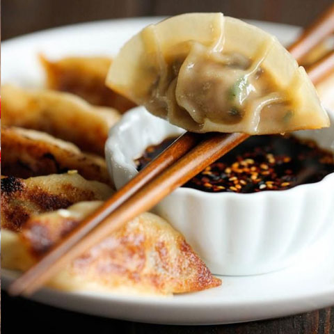 Entradas y Sopas 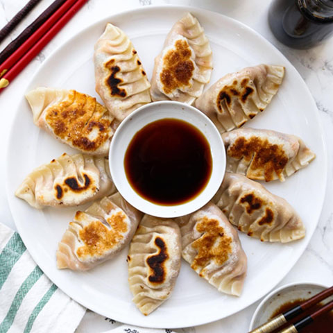 Mandu (Dumpling) Arroz mixto coreano con espinaca, zanahoria zukini, germinados, pimenton, proteina y huebo frito: servido con salsa picante o dulce. 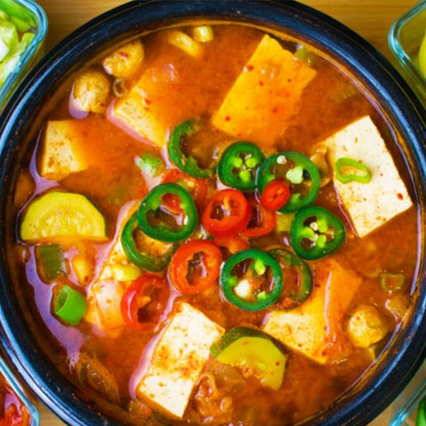 Sopa Doenjang Sopa hecha con pasta de soja fermentada, verduras, setas y tofu. 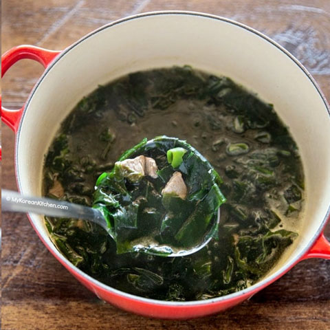 Sopa Miyeok guk Sopa de algas coreanas acompañada de arroz.
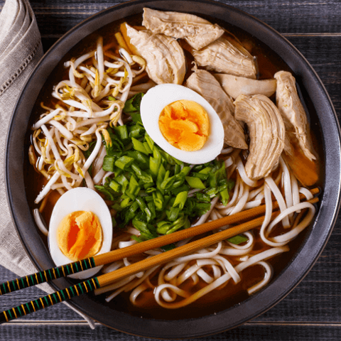 Pastas 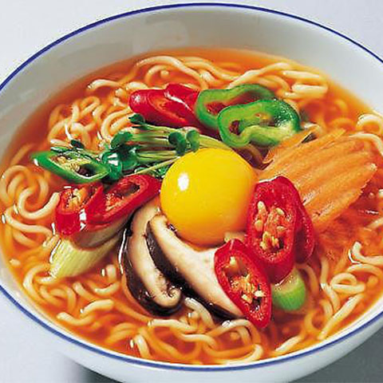 Ramyeon Tradicional Sopa coreana con res, pollo o cerdo con huevo y vegetales. 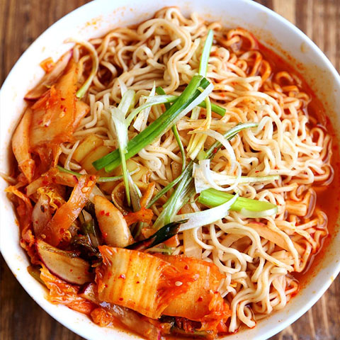 Ramyeon Urimuri Sopa con sabor a kimchi con cerdo sofreido. 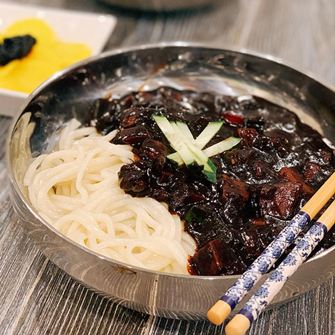 Ramyeon Llallangmyeon Pasta coreana cubierta de salsa fermentada de frijol.
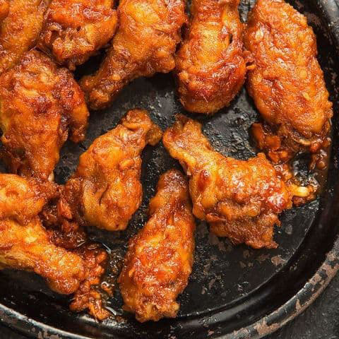 Fritura asiatica 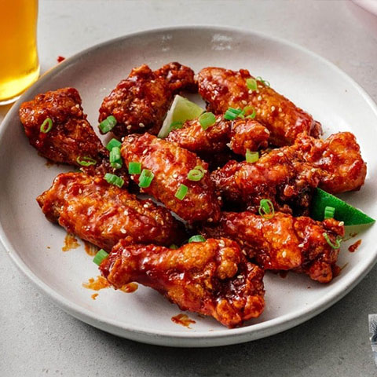 Dakgangjeong Alas y bombones de pollo frio crujiente en salsas coreanas de la casa. 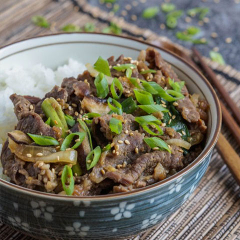 Dupbap Pechuga frita en cama de arroz con salsa coreana y ensalada. 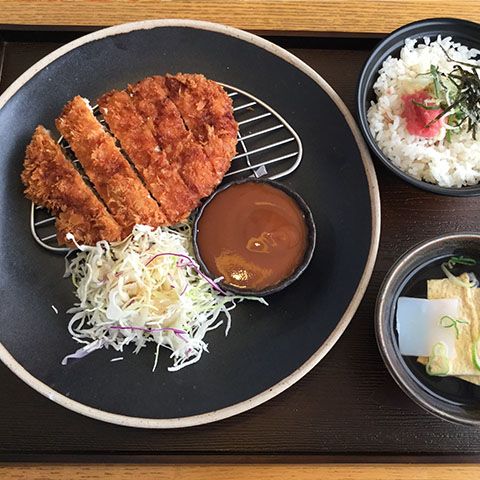 DonKatsu Chuleta de cerdo empanada y frita, acompañado de ensalada y salsa.
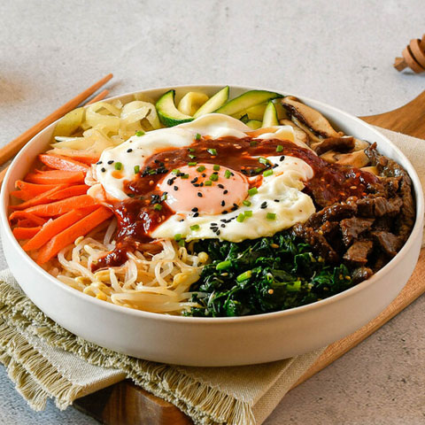 Platos Fuertes 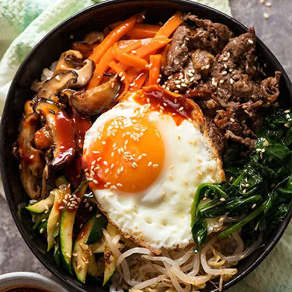 Bibimbap Arroz mixto coreano con espinaca, zanahoria zukini, germinados, pimenton, proteina y huebo frito: servido con salsa picante o dulce. 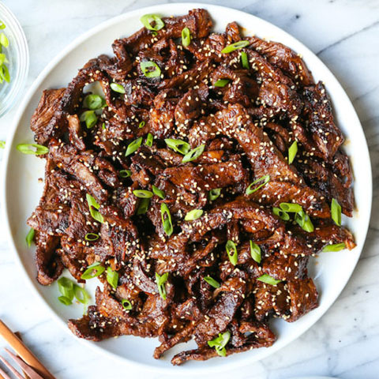 Bulgogi Lomo viche marinado en salsa coreana a base ceboll, pera, miel, jengibre y ajongoli. 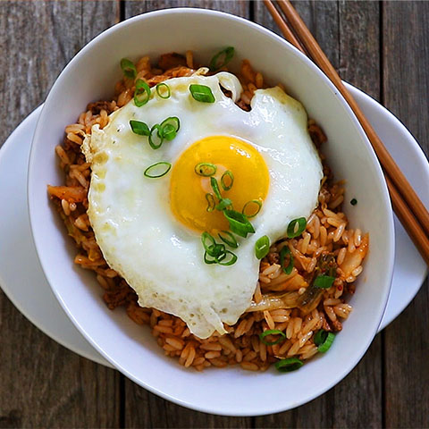 Arroz de Kimchi Arroz sofreido con kimchi, salsa de ostras, picante coreano, huevo, champiñon y vegetales.
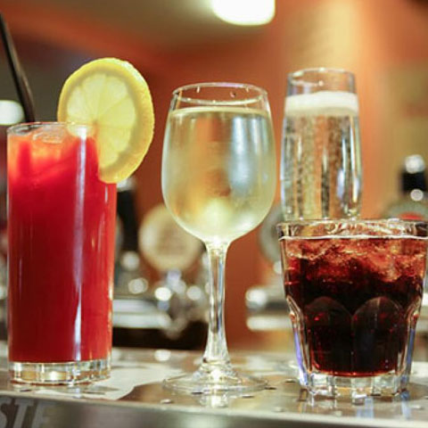 Bebidas 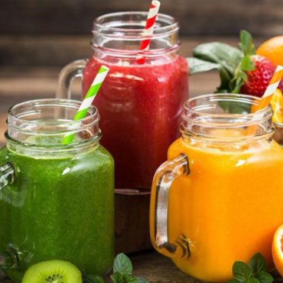 Jugos Naturales Jugos naturales de mango, kiwi, mora o naranja. 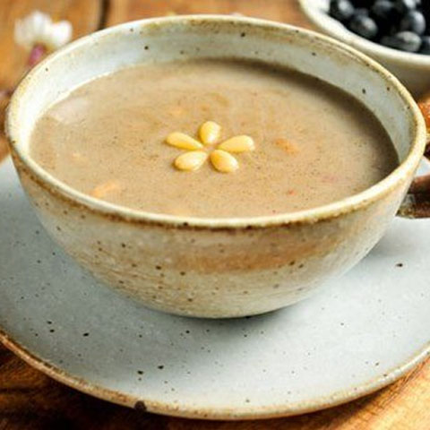 Te Te hecho de Yuimi tostado, mezclado con nueces. 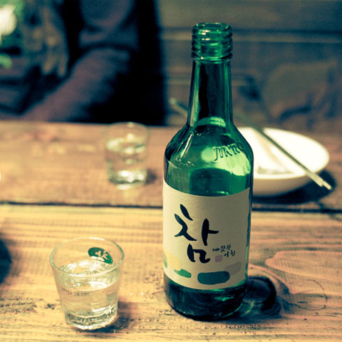 Soju El soju es una bebida alcoholica hecha de arroz coreano